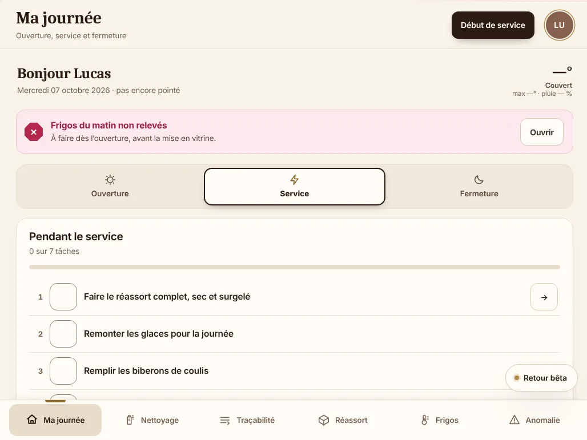
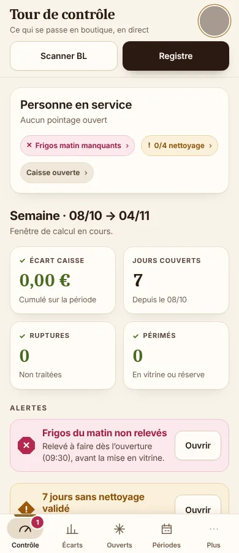
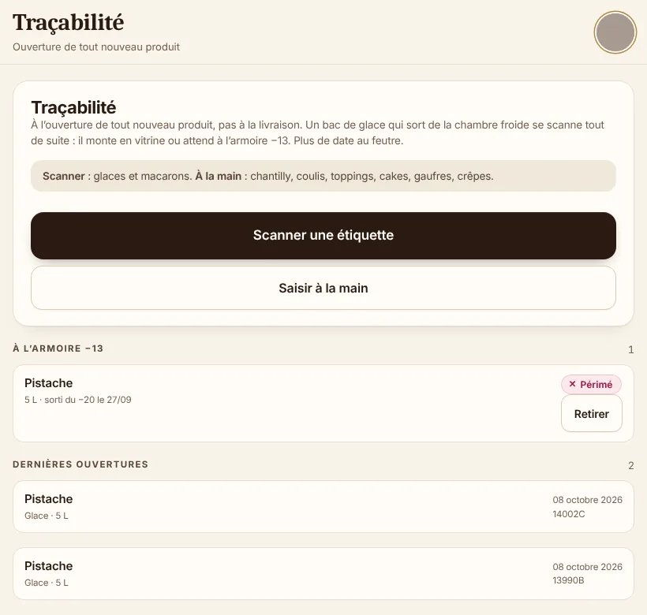
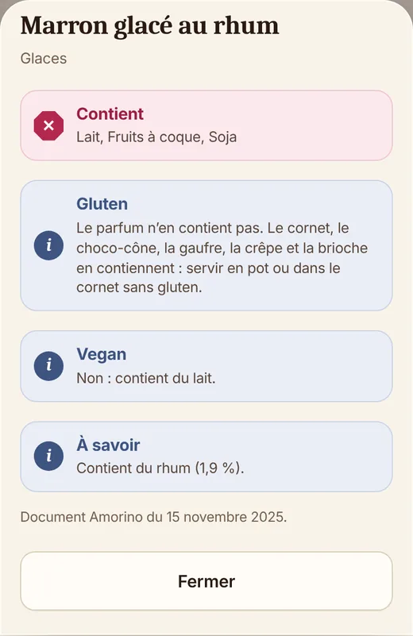

Pour les boutiques franchisées Amorino
Traçabilité, frigos, nettoyage, réassort et écarts de caisse. L’équipe saisit en deux appuis, le responsable voit tout en direct. Même sans réseau.
Mise en place offerte · Sans carte bancaire · Sans engagement


Fini les classeurs, les dates au feutre et les écarts qu’on n’explique pas.
Traçabilité
Photographiez l’étiquette du bac : le numéro de lot est lu et rangé tout seul. Ce qui part en vitrine, ce qui attend à l’armoire, ce qui est périmé : tout est daté, et le registre est prêt pour le contrôle.

Tour de contrôle
Écart de caisse, ruptures, produits périmés, frigos pas relevés, nettoyage en retard : le responsable voit l’essentiel en un coup d’œil, sur sa tablette ou son téléphone.
Allergènes
Un client demande ce que contient un parfum ? La fiche s’ouvre en deux appuis, tirée du document officiel de l’enseigne, qui reste la référence. Même hors ligne.

Relevés de température guidés matin et soir, avec alerte quand ils manquent.
Les tâches du jour à cocher, à leur rythme : quotidien, hebdomadaire ou mensuel.
Stock froid et sec, comptage simple, et un résumé avant de valider.
L’export de caisse comparé au stock, période par période, avec les réceptions et les pertes.
Pas de réseau en chambre froide ? Les saisies sont gardées et partent toutes seules au retour du Wi-Fi.
Chaque équipier se connecte avec son prénom et un code à quatre chiffres. On sait qui a fait quoi.
Deux minutes avec le formulaire ci-dessous.
Sur votre tablette, avec votre équipe et vos frigos.
Gratuitement. Ensuite, vous décidez de continuer ou non.
Essai gratuit
Non. L’application s’ouvre et enregistre sans réseau, y compris en chambre froide. Les saisies partent toutes seules dès que le Wi-Fi revient.
Tablette, téléphone ou ordinateur, dans le navigateur. Elle s’ajoute à l’écran d’accueil comme une application, sans passer par un magasin d’applis.
Chaque boutique a son propre compte et ne voit que ses données. L’équipe se connecte avec son prénom et son code ; le compte de la boutique reste chez le responsable.
Vous choisissez de continuer ou non. Aucune carte bancaire n’est demandée pour l’essai, donc rien n’est prélevé automatiquement.
Non. Pilot-Shop est un outil indépendant, pensé pour le quotidien des boutiques franchisées. Les documents officiels de l’enseigne restent la référence.
Chamonix
Composez votre code à 4 chiffres